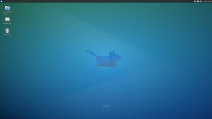
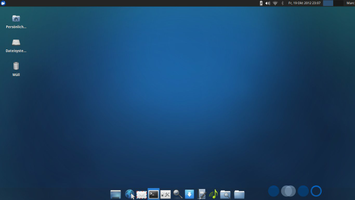
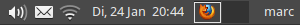
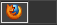
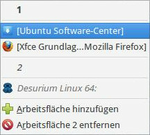
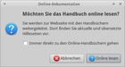
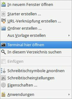
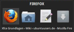
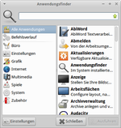

Xfce Grundlagen
Dieser Artikel wurde für die folgenden Ubuntu-Versionen getestet:
Dieser Artikel ist größtenteils für alle Ubuntu-Versionen gültig.
 In diesem Basisartikel wird eine Einleitung in die Benutzung von Xubuntu und der graphischen Oberfläche Xfce sowie einige Tipps für den anfänglichen Umgang gegeben. Sofern man an der Geschichte von Xfce interessiert ist, kann man im verlinkten Artikel Informationen zum Projekt sowie zu den unterschiedlichen Xubuntu-Versionen in Erfahrung bringen.
In diesem Basisartikel wird eine Einleitung in die Benutzung von Xubuntu und der graphischen Oberfläche Xfce sowie einige Tipps für den anfänglichen Umgang gegeben. Sofern man an der Geschichte von Xfce interessiert ist, kann man im verlinkten Artikel Informationen zum Projekt sowie zu den unterschiedlichen Xubuntu-Versionen in Erfahrung bringen.
Der Funktionsumfang variiert je nach Xfce-Versionsnummer geringfügig, ebenso wie das Standard-Design des Xubuntu-Desktops.
|  |
| Standard-Design von Xubuntu 14.04 |
|  |
| Standard-Design von Xubuntu 12.10 |
Aufbau¶
Die grafische Benutzeroberfläche von Xubuntu hat sich in den vergangenen Jahren optisch immer wieder leicht gewandelt. Mit der Maus können die wichtigsten Elemente gesteuert werden. Kernelemente der Oberfläche bilden die Leisten, welche sich am oberen und unteren Rand des Bildschirms befinden. Ab Xfce 4.10 bzw. Xubuntu 12.10 können diese auch seitlich plaziert werden.
Menüleisten¶
In der oberen linken Ecke des Bildschirms findet man das  Anwendungsmenü (früher: "Applications"). Hier befinden sich alle auf dem System installierten graphischen Programme. Diese sind in entsprechende Kategorien einsortiert. Möchte man das Menü bearbeiten, empfiehlt es sich, den entsprechenden Artikel zu lesen.
Anwendungsmenü (früher: "Applications"). Hier befinden sich alle auf dem System installierten graphischen Programme. Diese sind in entsprechende Kategorien einsortiert. Möchte man das Menü bearbeiten, empfiehlt es sich, den entsprechenden Artikel zu lesen.
Seit Xubuntu 14.04 wird das Whisker Menu verwendet, wodurch sich Änderungen bei der Menübedienung ergeben.
Whisker Menu¶
Ein paar nützliche Elemente für das Suchfeld:
| Suchfeld | |
| Eingabe | Beschreibung |
#abiword | Ein vorgestelltes # öffnet die Handbuchseiten für das gewünschte Programm - hier Abiword. |
!w Suchwort | !w gefolgt vom Suchwort: Suchwort |
!foo | Programm foo wird im Terminal ausgeführt. |
Hinweis:
Die Suche kann bequem um das Wiki von ubuntuusers.de erweitert werden.

Hinweise¶
In der rechten oberen Ecke befinden sich ein Benachrichtigungsfeld, die Uhrzeit und ein Symbol zum Beenden der Sitzung. Im Benachrichtungsfeld wird man über evtl. verfügbare Updates, eingehende Nachrichten (E-Mail, Instant Messenger etc.) und den Zustand der Netzwerkverbindung informiert. Zusätzlich können dort laufende Programme wie z.B. Radio Tray, die nicht in der Fensterliste erscheinen, angezeigt werden.
Möchte man den Computer herunterfahren, wählt man die Schaltfläche an. Diese befindet sich ggf. unter dem Benutzernamen.

Unendliche Weiten¶
Um die Übersicht bei vielen geöffneten Fenstern nicht zu verlieren, hat man auch in Xfce die Möglichkeit, virtuelle Desktops zu nutzen. Die dazugehörige Anzeige findet man im Panel. Sie erleichtert den Überblick, da man Programme auf unterschiedlichen virtuellen Desktops öffnen kann. Zu jedem geöffneten Programm erscheint ein Kästchen mit dem passenden Symbol auf dem Minidesktop. Der jeweils aktive Desktop ist dunkel hervorgehoben. Die Programmfenster können mit der Maus innerhalb der virtuellen Desktops per Drag & Drop verschoben werden. Dies kann erreicht werden, indem man das Kästchen des entsprechenden Programms bei gedrückter linker Maustaste  verschiebt.
verschiebt.
Das untere Panel¶
Hinweis:
Seit Xubuntu 14.04 ist das untere Panel nicht mehr vorhanden.
Das Panel von Xfce, dass bei Mausberührung automatisch eingeblendet wird, kann frei konfiguriert werden und bietet eine Reihe von Erweiterungsmöglichkeiten. Je nach verwendeter Version von Xubuntu variiert es in der Grundeinstellung minimal. Eine kurze Zusammenfassung des unteren Panels von Xubuntu:
| Panel | |
| Schaltfläche | Beschreibung |
| Arbeitsoberfläche (Desktop) anzeigen (Minimieren aller Fenster). | |
 | Anwendung aufrufen - in diesem Beispiel den Webbrowser. |
| Anwendung aufrufen - hier: Thunderbird | |
| Startet ein Terminal-Fenster. | |
| Startet den Einstellungsmanager für Veränderungen am Verhalten von Xfce. | |
| Der Anwendungsfinder. | |
| Startet das Software-Center. Als Alternative kann der Paketmanager Synaptic verwendet werden. | |
| Textverarbeitungsprogramm Abiword | |
| Bildbearbeitungsprogramm GIMP | |
| Audioplayer Gmusicbrowser | |
| Direktzugriff auf einen Ordner - in der Grundeinstellung das Homeverzeichnis. | |
Rechts unten auf der Arbeitsfläche findet man den Mülleimer. Der Inhalt kann mit einem Rechtsklick  auf das Symbol und der Auswahl von "Papierkorb leeren" entsorgt werden. auf das Symbol und der Auswahl von "Papierkorb leeren" entsorgt werden. | |
Standardprogramme¶
Eine Liste der Standardprogramme ist im Artikel Xfce, ein Vergleich mit anderen Desktop-Umgebungen unter Standardanwendungen zu finden. Für Xfce interessant sind für den Anfang der Dateimanager Thunar, die Paketverwaltungen Software-Center und Synaptic (bis 12.04), das Brennprogramm Xfburn, der Mediaplayer Parole und die Installation von Codecs, um Multimedia-Dateien abspielen bzw. nutzen zu können.
Tipps¶
Arbeitsflächen¶
Um ein gestartetes Programm auf allen Arbeitsflächen anzuzeigen, lediglich den Kreis in der Fensterdekoration des Programms anwählen. Um dies Rückgängig zu machen, den Vorgang wiederholen. Eventuell muss diese Schaltfläche noch aktiviert werden.

Arbeitsflächenmenü¶
Eine Übersicht aller laufenden Programme erreicht man mittels Klick mit dem Mausrad  auf den leeren Desktop. Das Arbeitsflächenmenü gestattet zusätzlich den schnellen und unkomplizierten Wechsel der Arbeitsflächen. Nebenbei bietet das Menü die Möglichkeit, die Anzahl der verwendeten Arbeitsoberflächen zu erhöhen bzw. zu reduzieren.
auf den leeren Desktop. Das Arbeitsflächenmenü gestattet zusätzlich den schnellen und unkomplizierten Wechsel der Arbeitsflächen. Nebenbei bietet das Menü die Möglichkeit, die Anzahl der verwendeten Arbeitsoberflächen zu erhöhen bzw. zu reduzieren.
Einstellungen¶
Um die Einstellungen von Xfce zu verändern, ruft man den Einstellungsmanager auf. Hier kann man unter anderem Einstellungen an den Arbeitsflächen, dem Arbeitsplatz, dem Bildschirmschoner, dem Dateimanager und vielen anderem mehr vornehmen.
Hilfe¶

Bis Xfce 4.8 bzw. Xubuntu 12.04 kann ein lokal vorhandene, hauptsächlich deutschsprachige Hilfefunktion genutzt werden. Diese ist entweder über das Anwendungsmenü oder die Taste
F1 innerhalb von Xfce-Anwendungen verfügbar. Ab Xfce 4.10 wurde die Hilfe-Funktion durch eine Online-Dokumentation  ersetzt, die zwingend eine Internetverbindung benötigt. Die Entwickler versprechen sich davon auf lange Sicht eine leichtere Pflege und Übersetzung der Dokumentation.
ersetzt, die zwingend eine Internetverbindung benötigt. Die Entwickler versprechen sich davon auf lange Sicht eine leichtere Pflege und Übersetzung der Dokumentation.
Spezielle Startbefehle können besonders in Problemsituationen nützlich sein. Diese können unter Xfce Startbefehle eingesehen werden.

Kontextmenü¶
Ein Rechtsklick () auf den leeren Desktop öffnet das Kontextmenü (siehe Abbildung rechts). Hierüber erreicht man wichtige Basisfunktionen zum Desktop. Neben der Erstellung eines Starters oder einer Internetverknüpfung kann man hier die Arbeitsplatz-Einstellungen erreichen. Hier kann man unter anderem festlegen, dass mit der rechten Maustaste das Anwendungsmenü direkt auf dem Desktop geöffnet werden soll.
Außerdem kann man mittels des Eintrags "Aus Vorlage erstellen" (engl. "Create from Template") sehr schnell eine neue Datei auf dem Desktop anlegen, die anschließend sofort mit Doppelklick geöffnet werden kann. Eine kleine Auswahl an Vorlagen kann man herunterladen  . Diese Datei braucht nur in den Ordner ~/Vorlagen (bzw. ~/Templates bei älteren Ubuntu-Versionen) im Homeverzeichnis entpackt zu werden - die Vorlagen stehen sofort zur Verfügung.
. Diese Datei braucht nur in den Ordner ~/Vorlagen (bzw. ~/Templates bei älteren Ubuntu-Versionen) im Homeverzeichnis entpackt zu werden - die Vorlagen stehen sofort zur Verfügung.

MCS Manager¶
Hat man auf einer Oberfläche mehrere Fenster geöffnet, erreicht man diese bequem mit Alt + Tab ⇆ . Die Taste Alt gedrückt halten und mittels Tab ⇆ die gewünschte Anwendung aufrufen.
Programme suchen¶
 Xfce bietet eine sehr komfortable Methode, um installierte Programme nach Kategorien oder per Stichwortsuche anzuzeigen. Hier muss man im Anwendungsmenü unter "Zubehör" die Anwendung "Anwendungsfinder" (früher: "Appfinder") starten. Ab Xubuntu 14.04 übernimmt das Whisker Menu diese Funktion (siehe auch Problembehebung).
Auf der linken Seite des Anwendungsfinders können Kategorien zur Eingrenzung gewählt werden. Im rechten Bereich ist der Name der Anwendung und eine Kurzbeschreibung zu lesen. Möchte man die Kategorisierung und den Startbefehl in Erfahrung bringen, verharrt man mit dem Mauszeiger über dieser. Die Informationen werden nach einigen Sekunden eingeblendet. Über das Eingabefeld kann gezielt nach dem gewünschten Stichwort gesucht werden.
Ab Xubuntu 12.10 wurde der Anwendungsfinder komplett überarbeitet und mit dem Anwendungsstarter zusammengelegt. Die Abbildung rechts zeigt das neue Aussehen.
Tastenkürzel¶
Die Standard-Tastenkürzel wurden ab Xubuntu 12.10 komplett überarbeitet, um zum einen die unter Linux brachliegende
Windows -Taste (auch:
Super oder  ) intensiver zu nutzen und zum anderen bestimmte Standardprogramme schneller starten zu können. Die Kürzel können in den Einstellungen individuell angepasst werden.
) intensiver zu nutzen und zum anderen bestimmte Standardprogramme schneller starten zu können. Die Kürzel können in den Einstellungen individuell angepasst werden.
| Tastenkürzel | |
| Taste(n) | Funktion |
| Super + 3 | Abiword |
| Super + F | Thunar |
| Super + M | Thunderbird |
| Super + T | Terminal |
| Super + W | Firefox |
| Super + 1 | gmusicbrowser |
| Super + 4 | gnumeric |
| Super + E | Leafpad |
| Super + 2 | Pidgin |
| Super + R / Alt + F3 | Anwendungsfinder |
| Alt + F1 | Anwendungsmenü |
| Druck | Bildschirmfoto anfertigen. |
| Alt + Druck | Bildschirmfoto des aktuellen Fensters. |
| Strg + F1 - Strg + F10 | Arbeitsfläche gezielt aufrufen. |
| Alt + Einfg / Alt + Entf | Arbeitsfläche hinzufügen / entfernen |
| Strg + Alt + ← / Strg + Alt + → | Durch die Arbeitsflächen blättern. |
| Strg + Alt + D | Arbeitsoberfläche anzeigen. |
| Alt + Tab ⇆ | Startet den MCS Manager. |
| Alt + F2 | Programme starten. |
| Alt + F7 | Aktives Fenster maximieren / minimieren |
| F11 | Das aktuell verwendete Programm im Vollbild- / Fenstermodus darstellen. |
| Strg + Esc | Öffnet das Anwendungsmenü. |
| ↑ + ↓ + ← + → | Navigation im Menü. |
| ⏎ | Auswahl im Menü treffen. |
Hinweis:
Nicht jedes Tastenkürzel ist in jeder Version von Xfce bzw. Xubuntu verfügbar - kann aber entsprechend definiert werden.
 Übersichtsartikel
Übersichtsartikel- Erstellt mit Inyoka
-
 2004 – 2017 ubuntuusers.de • Einige Rechte vorbehalten
2004 – 2017 ubuntuusers.de • Einige Rechte vorbehalten
Lizenz • Kontakt • Datenschutz • Impressum • Serverstatus -
Serverhousing gespendet von